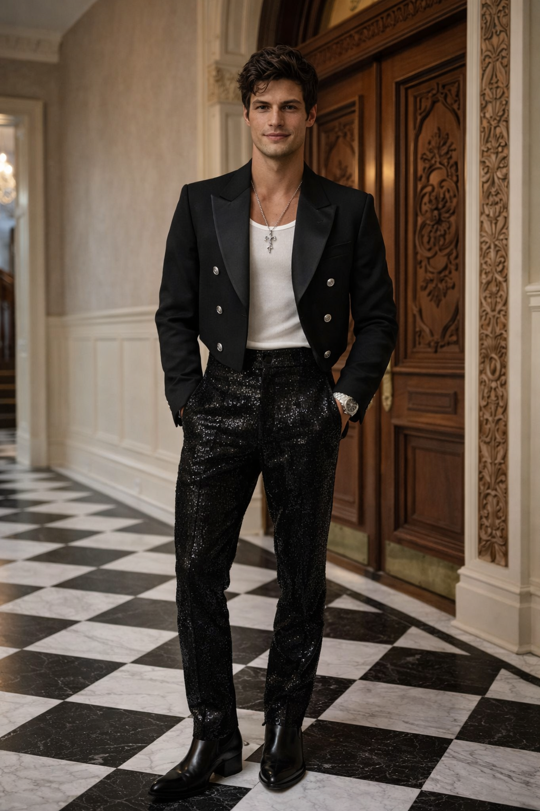
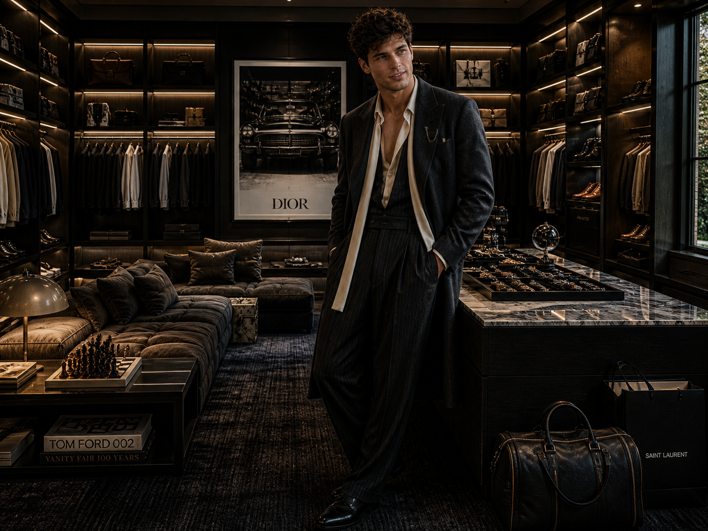
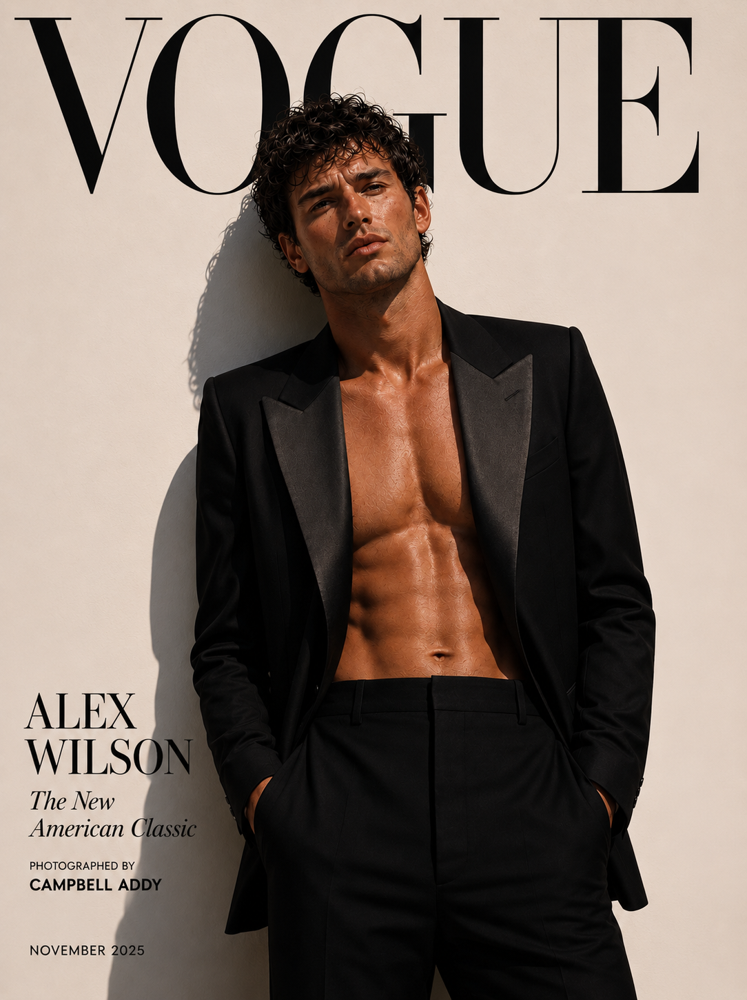

Black tie, never anonymous
Clean evening tailoring, exact proportions and a preference for presence over novelty.

On the runway, on the carpet and between appointments.
The clothes are not a celebrity afterthought. Alex understands construction, casting, image and the long conversation between a house and the person wearing it. Formal dressing is exact; off-duty style is instinctive and visibly his.



Clean evening tailoring, exact proportions and a preference for presence over novelty.
Custom and runway looks worn with an understanding of the collection rather than as borrowed costume.
A recognisable private grammar—dark, tactile, unforced—followed closely because it never feels arranged for the cameras.